ROS 2 on D3-G
Yocto integration and USB camera lab
Automotive Sensors
Three-hour workshop
Learning outcomes
By the end of the session
- Explain ROS 2 nodes, communication and execution.
- Describe camera, lidar and radar pipelines and fusion prerequisites.
- Compare ROS 2 with automotive platforms and networks.
- Build and inspect the D3 camera pipeline.
Session schedule
180 minutes including a ten-minute break
| Time | Activity |
|---|---|
| 0–10 min | Board recap and outcomes |
| 10–35 min | ROS 2 concepts and graph |
| 35–60 min | Camera, lidar, radar and sensor fusion |
| 60–75 min | Vehicle platforms, networks and safety |
| 75–95 min | Yocto integration and prepared-image demo |
| 95–105 min | Break |
| 105–125 min | Talker/listener and board–PC CLI |
| 125–145 min | USB and V4L2 capture |
| 145–170 min | ROS camera and viewer |
| 170–180 min | Results and review |
Three machines, three responsibilities
Each command belongs to a specific environment
| Environment | Responsibility | Main tools |
|---|---|---|
| Build host | Cross-compile packages and assemble the image | BitBake, Git, build logs |
| D3-G board | Boot Linux and acquire sensor data | ROS 2, UVC, V4L2 |
| Student PC | Connect to the board and display images | SSH, ROS 2, rqt_image_view |
Board and OS checkpoint
D3 terminal
hostname uname -m cat /etc/os-release ip -br addr df -h /
- Expected CPU architecture: aarch64.
- Record the board address and image identity.
- Confirm that SSH reaches the intended board.
Nodes
Logical participants communicate across processes and machines
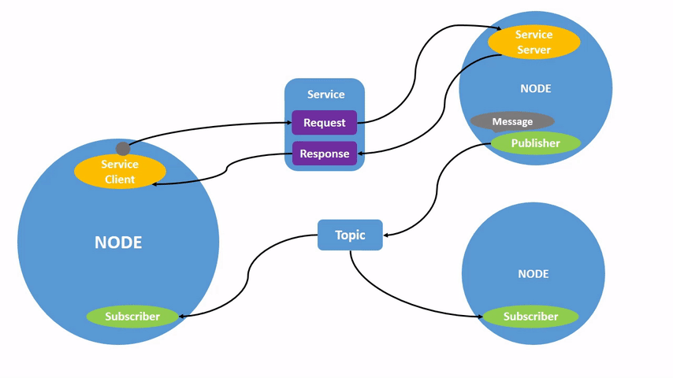
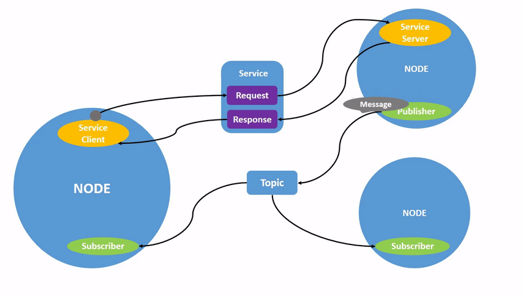
Source: ROS 2 documentation contributors

Topics
Publishers and subscribers exchange typed message streams
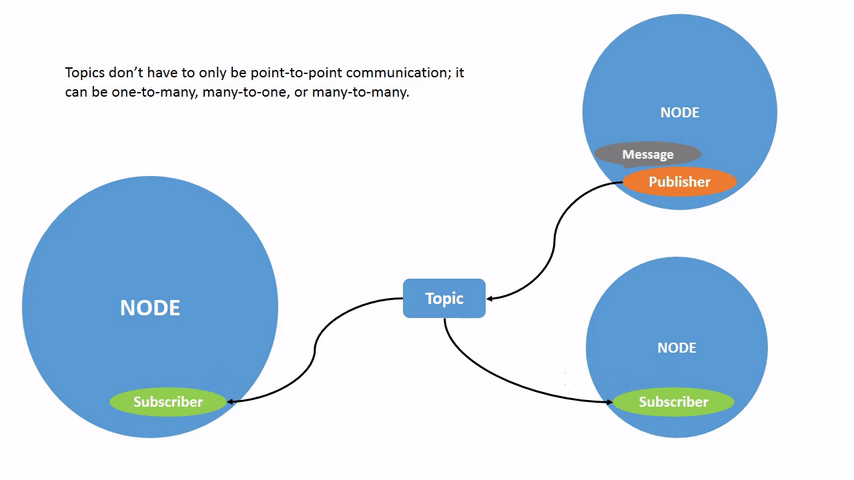
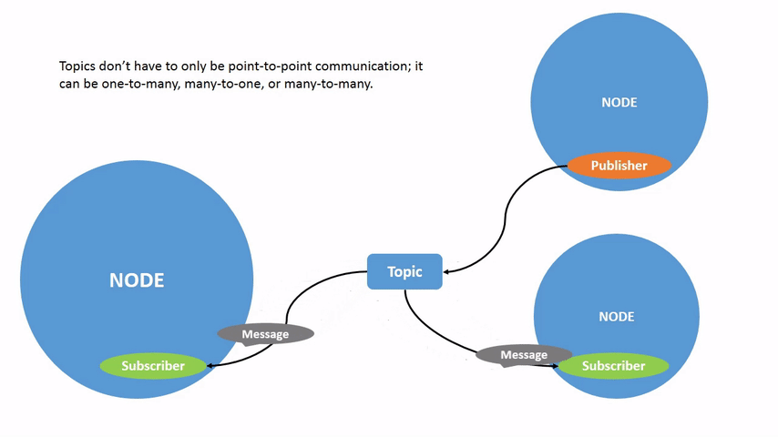
Source: ROS 2 documentation contributors

The ROS graph in rqt_graph
An official turtlesim example, not a D3 test result
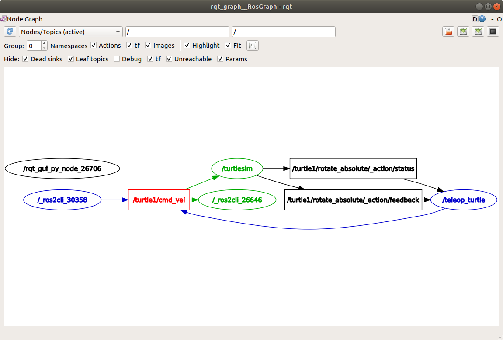
Ellipses represent nodes.
Topic connections reveal data flow.
Our camera graph follows the same pattern.
Source: ROS 2 documentation contributors

Image messages
sensor_msgs/msg/Image carries pixels and metadata
| Field | Meaning |
|---|---|
| header | Acquisition timestamp and coordinate-frame identifier |
| height, width | Image dimensions in pixels |
| encoding | Pixel representation, such as rgb8 or mono8 |
| step | Bytes per image row, including any padding |
| data | Pixel bytes |
Topics, services and actions
Different communication patterns
| Pattern | Interaction | Example |
|---|---|---|
| Topic | Continuous or event-driven messages | Camera images |
| Service | Request followed by a response | Query a device setting |
| Action | Goal, feedback and result | Navigate to a destination |
Services
A request followed by a response

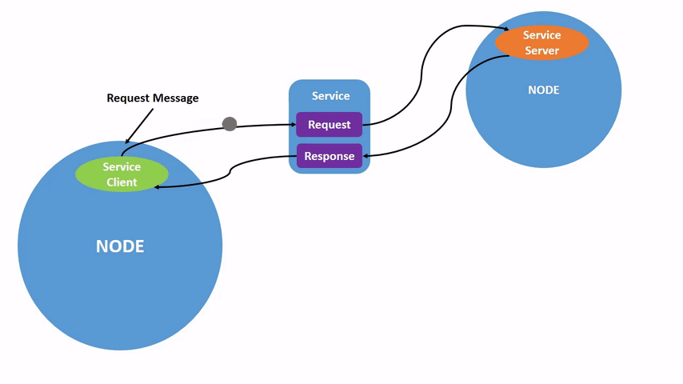
Source: ROS 2 documentation contributors

Actions
A goal with feedback and a result

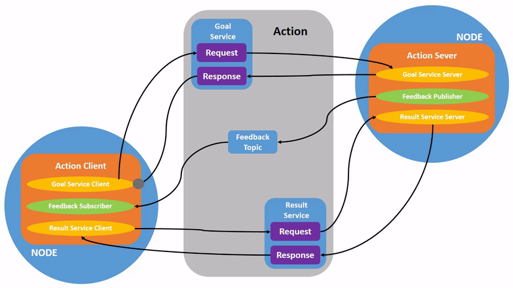
Source: ROS 2 documentation contributors

DDS and the ROS middleware interface
Communication beneath the application
- ROS client libraries expose node and topic APIs.
- The RMW interface connects ROS 2 to a middleware implementation.
- This image selects rmw_fastrtps_cpp.
- Discovery, network access and QoS affect communication.
ROS 2 software layers
Where application code, middleware and Linux meet
| Layer | Responsibility |
|---|---|
| Application nodes | Camera acquisition, detection, tracking or visualization |
| rclcpp / rclpy | C++ and Python client APIs |
| rcl and RMW | Common client support and middleware abstraction |
| DDS implementation in this lab | Discovery, data exchange and QoS |
| Linux, drivers and hardware | Scheduling, networking, USB and sensor access |
Execution and deployment
A graph does not specify CPU scheduling
- Executors dispatch subscription, timer and service callbacks.
- Launch files start and configure a group of nodes.
- Composition can place multiple nodes in one process.
- Threading, queues and memory copies still affect latency.
Camera, lidar and radar
Complementary measurements and different failure modes
| Sensor | Useful observations | Important limitations |
|---|---|---|
| Camera | Appearance, lanes, signs and object class | Lighting, glare, occlusion; depth needs inference or geometry |
| Lidar | 3D structure and geometric range | Occlusion, weather and reflective surfaces |
| Radar | Range and radial velocity, often useful in poor visibility | Multipath, clutter and angular resolution limits |
Camera configuration
Teaching example. Product photo illustrates an automotive camera.
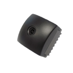
Sensor and link: USB/UVC in our lab.
Driver publishes Image and CameraInfo.
Rectification and detection feed fusion.
Source: Autoware documentation contributors; product images retain vendor ownership

Lidar configuration
Teaching example. The lidar driver depends on the selected device.
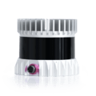
Sensor packets often arrive over Ethernet.
The driver publishes sensor_msgs/PointCloud2.
Filtering and motion compensation precede detection.
Source: Autoware documentation contributors; product images retain vendor ownership

Radar configuration
Teaching example. Output can be detections or tracked objects.
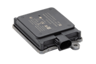
CAN/CAN FD or Ethernet depends on hardware.
A driver decodes the vendor protocol.
RadarScan or RadarTracks can feed tracking and fusion.
Source: Autoware documentation contributors; product images retain vendor ownership

A three-sensor ROS 2 interface
Illustrative topic names. Actual drivers define their interfaces.
| Producer | Example output | Consumer |
|---|---|---|
| Camera driver | /camera/image_raw: Image | Image preprocessing and detector |
| Lidar driver | /lidar/points: PointCloud2 | Point-cloud preprocessing and detector |
| Radar driver | /radar/scan: RadarScan | Radar processing and tracker |
| Fusion / tracking | /fusion/tracks: application-defined type | Prediction and planning |
Radar driver and vehicle links
Autoware reference architecture
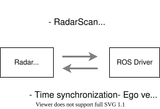
Sensor protocol and ROS message format are different interfaces.
A gateway does not automatically convert units, frames or timestamps.

Sensor preprocessing in Autoware
A reference design for combining heterogeneous sensor inputs
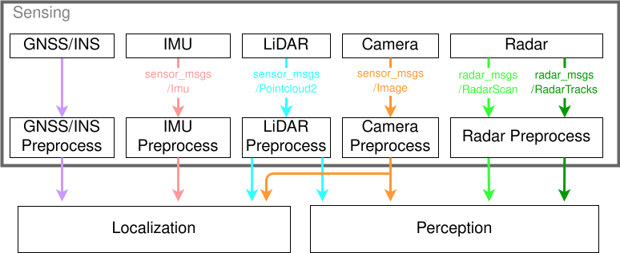

Point clouds in a common frame
Autoware ground–lidar calibration example
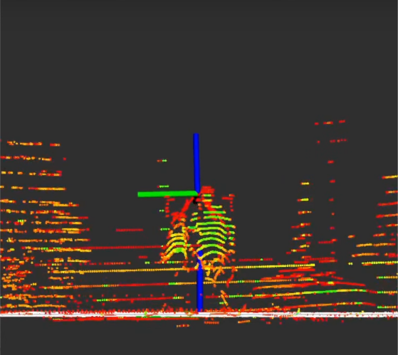
Source: Autoware documentation contributors; product images retain vendor ownership

Transforms and sensor frames
tf2 maintains relationships between coordinate frames
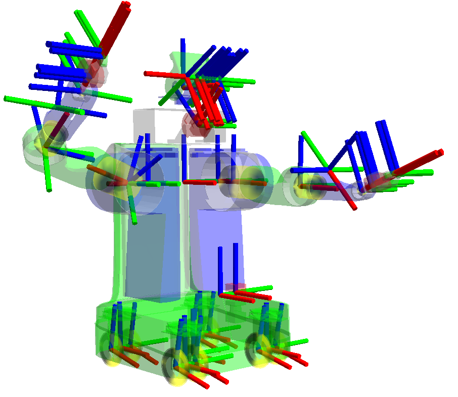
Each sensor has its own frame.
Extrinsic calibration connects sensor frames to the vehicle.
Transforms must match the measurement time.
Source: ROS 2 documentation contributors

Camera–lidar calibration
An Autoware projection example
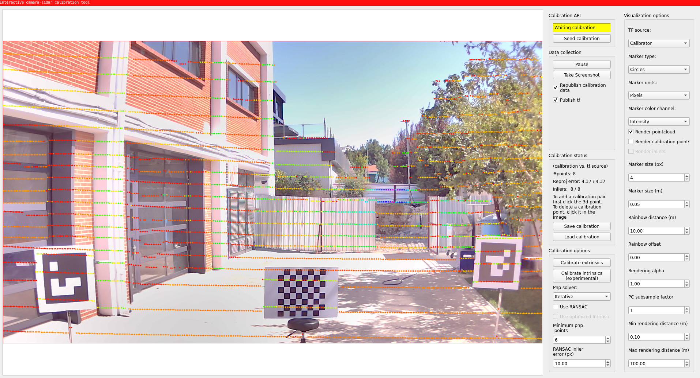

Time synchronization
Correct geometry also requires compatible timestamps
- Timestamp data at acquisition when the device supports it.
- Use a common time basis and check clock offset.
- Match measurements within a justified time window.
- A small queue does not compensate for clock error.
Perception and fusion
Autoware separates sensor input, recognition and planning interfaces
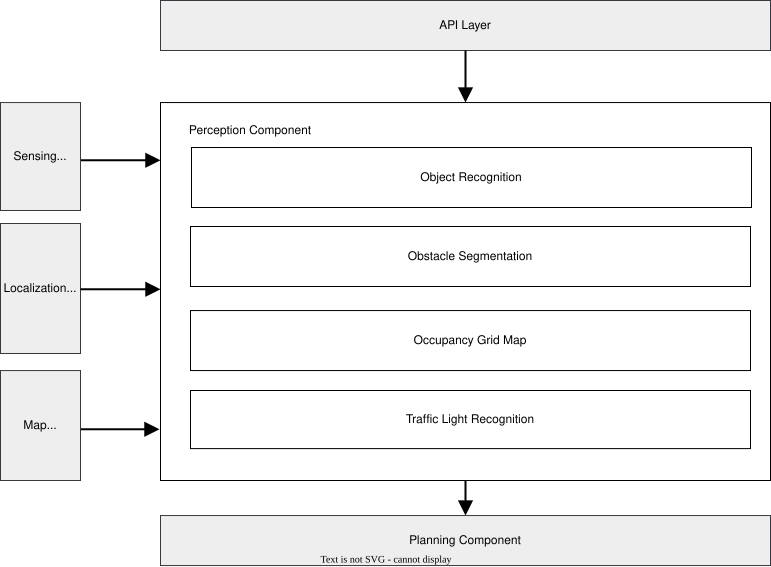

Tracking across measurements
Autoware multi-object tracking reference
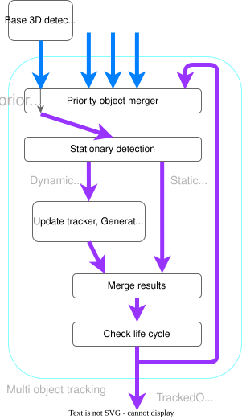
Associate detections over time.
Estimate state and uncertainty.
Handle missed detections and conflicting evidence.

Autoware in the driving stack
A ROS 2-based application stack above the communication framework


Vehicle software uses several technology layers
A role-based comparison avoids false alternatives
| Role | Examples | Relationship to this lab |
|---|---|---|
| Applications | Autoware, OEM ADAS and control software | Algorithms above middleware |
| ECU software platform | AUTOSAR Classic, Adaptive, Linux or RTOS stacks | Depends on ECU role and integration |
| Communication | DDS, SOME/IP, CAN/CAN FD, Ethernet | Different protocol layers and semantics |
| Engineering assurance | ISO 26262, ISO 21448, ISO/SAE 21434 | Lifecycle and evidence beyond package choice |
ROS 2 and AUTOSAR platforms
They address overlapping needs with different scope
| Dimension | ROS 2 | Classic | Adaptive |
|---|---|---|---|
| Main focus | Robotics applications and tools | Predictable embedded ECU software | Higher-performance service-oriented ECU software |
| Application model | Nodes, topics, services, actions | Software components and RTE | Adaptive applications and services |
| Execution base | OS and middleware integration | Configured basic software and OS | POSIX-based OS environment |
| Production assurance | Depends on selected product and system evidence | Depends on implementation and integration | Depends on implementation and integration |
Example deployment across vehicle ECUs
Conceptual arrangement. Production designs vary by vehicle.
| Compute location | Example responsibility | Possible software environment |
|---|---|---|
| Sensor electronics | Capture and local signal processing | Vendor firmware or RTOS |
| ADAS / central compute | Perception, fusion and planning | ROS 2 stack, Adaptive platform or OEM stack |
| Gateway / zonal controller | Network routing and local I/O | AUTOSAR, RTOS or mixed architecture |
| Actuator ECU | Local control, diagnostics and protection | Classic platform or dedicated embedded stack |
Vehicle networks and middleware
A ROS topic and a vehicle bus are different abstractions
| Technology | Typical role | Integration concern |
|---|---|---|
| CAN / CAN FD | Control and status frames | Signal packing, cycle time, units and bus load |
| LIN | Low-cost local actuator/sensor networks | Scheduling and gateway translation |
| Automotive Ethernet | Network links for larger data volumes | PHY, switching, traffic design and timing |
| SOME/IP | Service-oriented communication over IP | Service definitions and serialization |
| DDS in this lab | Data-centric publish/subscribe and QoS | Discovery, compatibility and resource limits |
Vehicle interface boundary
A simplified teaching architecture for commands and feedback
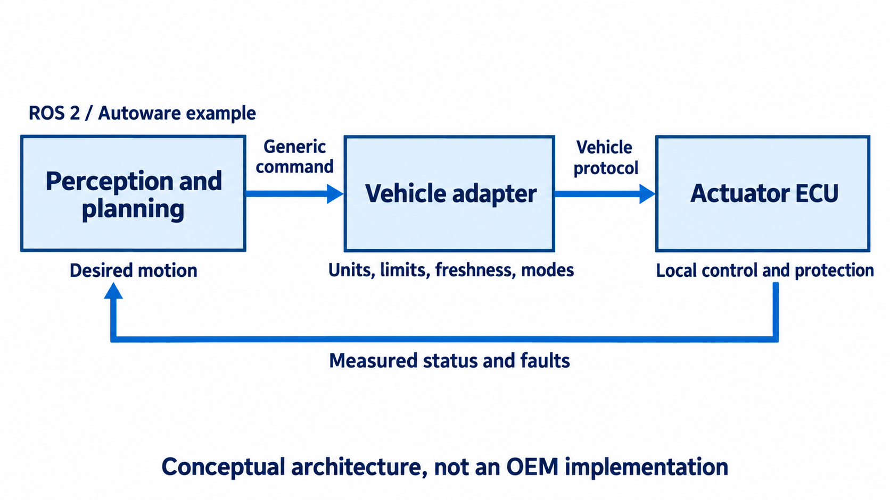
Source: Course-created conceptual illustration (AI-assisted), based on Autoware vehicle-interface design
Real-time behavior and safety evidence
Middleware selection is one part of system engineering
| Concern | Required reasoning |
|---|---|
| Timing | Worst-case deadlines, scheduling, memory use and overload behavior |
| Functional safety | Hazard analysis and evidence for malfunctioning E/E behavior |
| SOTIF | Performance limitations and unsafe intended-function scenarios |
| Cybersecurity | Threats, access control, updates and lifecycle risk management |
| Validation | Unit/integration tests, simulation, HIL and controlled vehicle tests |
What transfers from this course
The engineering habits remain useful across automotive platforms
- Define the data contract: type, units, frame and time.
- Separate sensor access, processing and communication.
- Measure latency and loss under realistic load.
- Document faults, recovery and reproducible configuration.
BitBake and colcon
Two build workflows
| Tool | Typical input | Output in this course |
|---|---|---|
| BitBake | Recipes, layers and machine configuration | ARM64 packages and the D3 Linux image |
| colcon | ROS workspace packages | A workspace install tree for its selected platform |
Layers in this build
The existing BSP remains the hardware foundation
| Layer | Role |
|---|---|
| Poky and meta-openembedded | Linux distribution tools and general packages |
| meta-topst-bsp and meta-topst | D3 machine, kernel, drivers and base image |
| meta-ros-common, meta-ros2, meta-ros2-humble | ROS 2 Humble recipes and classes |
| meta-yu-ros2 | Course image and D3-specific integration settings |
Image contents
A small set of explicit packages brings dependencies
| Group | Examples |
|---|---|
| Environment | ros-workspace, ros-environment |
| CLI | ros2cli, ros2run, ros2node, ros2topic, ros2param |
| Interfaces and launch | ros2interface, ros2launch |
| First communication test | demo-nodes-cpp, rmw-fastrtps-cpp |
| Camera | v4l2-camera, v4l-utils, usbutils |
Reproducible source revisions
The manifest identifies the actual build inputs
- Keep the original TOPST baseline available.
- Pin meta-ros and personal fork commits.
- Record local configuration and the image manifest.
- Separate general recipe repairs from classroom policy.
- This Kirkstone integration uses an unsupported meta-ros branch.
Integration issues in this workspace
Repairs and configuration choices
| Issue | Current approach |
|---|---|
| Boost / fmt / OpenCV source locations | Pinned repairs in personal forks |
| OpenCV and PowerVR OpenCL providers | Disable target OpenCV OpenCL for CPU camera conversion |
| Host tool cache changes | Keep the original zstd-native version |
| USB camera driver | Existing TOPST UVC configuration is enabled |
Course scripts download
Ubuntu build host. Public repository, no GitHub login required.
cd ~ git clone --depth 1 --filter=blob:none --sparse \ https://github.com/yu-asw/automotive-sensor.git automotive-sensor-labs cd automotive-sensor-labs git sparse-checkout set labs/ros2-yocto
- run-build.sh is a course script, not a built-in Yocto command.
- Download the complete lab directory, including its layer and configuration.
Course tools installation
From the downloaded automotive-sensor-labs directory
python3 labs/ros2-yocto/install-tools.py --check python3 labs/ros2-yocto/install-tools.py
- Requires the existing SDK at ~/d3-g-yocto and the prepared host tools.
- Copies run-build.sh and its companion files into the SDK.
- Refuses to overwrite differing local files.
ROS layer and build setup
One-time setup after tool installation
cd ~/d3-g-yocto git clone --branch kirkstone \ https://github.com/ros/meta-ros.git layers/meta-ros git -C layers/meta-ros checkout --detach \ 446dd9e3f26fe8a6594671b5b865872b4199f16c python3 apply-forks.py python3 prepare-build.py
- Use this clone command only when meta-ros does not already exist.
- Stop BitBake before switching revisions. Reuse existing ROS build configuration.
Build demonstration
Build host terminal
cd ~/d3-g-yocto ./run-build.sh -n yu-ros2-image ./run-build.sh yu-ros2-image
- The setup scripts must already have prepared the separate build.
- A dry run checks scheduling, not compilation or runtime behavior.
- The first full build belongs in preparation time.
Build logs and acceptance
A task count alone does not prove success
- Check the final process exit code and task summary.
- Locate the first actionable error and its recipe task log.
- Verify image packages and ARM64 runtime files.
- Keep build success separate from board and camera tests.
Image and deployment checks
Build and archive checks passed; board and camera tests remain open
| Check | Evidence |
|---|---|
| Build | 8,354 tasks succeeded; exit code 0 |
| Root filesystem | ROS packages and ARM64 executables verified |
| FWDN archive | Input sizes, ZIP integrity and transfer hash verified |
| ROS communication | QEMU listener reception not confirmed; test on D3 |
| Hardware | Board boot and camera capture not yet verified |
FWDN download
Linux download PC; confirm the board and back up eMMC first
./fwdn --fwdn boot-firmware/fwdn.json ./fwdn --storage emmc --low-format ./fwdn -w boot-firmware/boot.single.json ./fwdn -w yu_ros2_d3g.fai --storage emmc --area user
- The first command loads RAM code; low-format erases eMMC.
- Use the tutorial for boot mode, Windows/macOS and recovery.
ROS environment
Every D3 terminal needs the same session settings
. /opt/ros/humble/local_setup.sh export ROS_DOMAIN_ID=10 export RMW_IMPLEMENTATION=rmw_fastrtps_cpp export ROS_LOCALHOST_ONLY=0
- Use the same domain on the board and its PC.
- Assign a different domain to each team.
- Source the environment again in each new terminal.
Talker and listener
Two D3 terminals
# Terminal A ros2 run demo_nodes_cpp talker # Terminal B ros2 run demo_nodes_cpp listener
- The talker publishes messages on /chatter.
- The listener should receive repeated messages.
- Stop both processes with Ctrl+C after recording the result.
ROS graph inspection
A third terminal while the demo is running
ros2 node list ros2 topic list -t ros2 topic info /chatter --verbose ros2 interface show std_msgs/msg/String ros2 topic hz /chatter
- Record the publisher, subscriber and message type.
- Explain what the measured receive rate represents.
Break
10 minutes
- Resume with board–PC communication.
- Keep the board powered and note its current IP address.
Board–PC communication
Same ROS domain, reachable network
| Setting | Board and PC |
|---|---|
| ROS distribution | Use the prepared Humble environments |
| Domain | Same ID within the team |
| Middleware | Use the selected Fast DDS configuration |
| Network | Reachable addresses and permitted discovery/data traffic |
| Localhost setting | Allow non-local communication |
Two-machine experiment
Talker on D3, listener on the PC
# D3, after environment setup ros2 run demo_nodes_cpp talker # PC, after Humble setup and matching domain ros2 run demo_nodes_cpp listener
- First confirm that both nodes work on one machine.
- Then move the subscriber to the PC.
- Compare the graph and message reception.
QoS reliability compatibility
Publisher offers, subscriber requests
| Publisher | Subscriber | Reliability compatible? |
|---|---|---|
| Best effort | Best effort | Yes |
| Best effort | Reliable | No |
| Reliable | Best effort | Yes |
| Reliable | Reliable | Yes |
Communication checkpoint
Before connecting the camera
- The PC receives /chatter from the board.
- Both terminals use the assigned domain.
- Students can name the topic type and both nodes.
- Students can distinguish discovery failure from data loss.
USB camera discovery
D3 terminal
lsusb v4l2-ctl --list-devices v4l2-ctl -d /dev/video0 --all
- Identify the actual capture device before using video0.
- One camera can expose more than one video device.
- USB detection and video capture are separate checks.
Camera format negotiation
The camera and driver must support the requested mode
v4l2-ctl -d /dev/video0 --list-formats-ext
- Record FOURCC, resolution and supported frame intervals.
- This v4l2_camera version supports YUYV, UYVY and GREY input.
- A camera’s MJPEG mode is not automatically usable here.
Capture without ROS
Example only after confirming YUYV at 640 × 480
v4l2-ctl -d /dev/video0 \ --set-fmt-video=width=640,height=480,pixelformat=YUYV \ --stream-mmap --stream-count=30 \ --stream-to=/tmp/camera-test.yuyv
- Record whether capture completes and any driver errors.
- The output contains raw frames, not a playable MP4 file.
- Close the capture tool before starting the ROS camera node.
ROS camera node
D3 terminal, using the confirmed capture mode
ros2 run v4l2_camera v4l2_camera_node --ros-args \ -r __ns:=/camera \ -p video_device:=/dev/video0 \ -p pixel_format:=YUYV \ -p 'image_size:=[640,480]'
- The namespace makes the image topic /camera/image_raw.
- Read startup logs for negotiated formats and capture errors.
Camera parameters and topics
A second D3 terminal
ros2 node list ros2 param list /camera/v4l2_camera ros2 param get /camera/v4l2_camera image_size ros2 topic info /camera/image_raw --verbose ros2 interface show sensor_msgs/msg/Image
- Use the actual node name from node list.
- Inspect publisher QoS before configuring the viewer.
PC image viewer
Prepared Humble PC terminal
ros2 run rqt_image_view rqt_image_view
- Select /camera/image_raw.
- Check domain, discovery and QoS if the topic has no images.
- Keep GUI rendering on the PC for this exercise.
Raw image bandwidth
Illustrative calculation for rgb8 output
| Quantity | 640 × 480 at 30 frames/s |
|---|---|
| Bytes per pixel | 3 |
| Bytes per frame | 640 × 480 × 3 = 921,600 |
| Payload rate | 27,648,000 bytes/s |
| Payload bit rate | 221.184 Mbit/s |
Four different frame rates
Receive-rate check: ros2 topic hz /camera/image_raw
| Rate | What it describes |
|---|---|
| Requested | The camera mode we ask for |
| Captured | Frames the driver actually obtains |
| Received | Frames a ROS subscriber observes |
| Displayed | Frames the viewer draws |
Troubleshooting by layer
Evidence narrows the next check
| Symptom | Next evidence |
|---|---|
| No USB device | Power, cable, lsusb and kernel logs |
| USB present, capture fails | Device capabilities, selected format and permissions |
| Capture works, node fails | ROS environment, parameters and node log |
| Topic visible, no images | Publisher/subscriber QoS and traffic path |
| Images arrive slowly | Resolution, encoding, receive rate and CPU/network load |
Team experiment
One controlled change and one explanation
- Record a working baseline image stream.
- Change one supported resolution or one communication setting.
- Measure the effect and identify the affected layer.
- Restore the baseline and repeat the test.
Lab submission
Evidence from the actual run
- Board image identity and team network/domain settings.
- Exact camera device, FOURCC, resolution and ROS encoding.
- Viewer screenshot and observed topic receive rate.
- Commands to reproduce the result and one diagnosed issue.
What this session connects
Linux image construction and sensor applications
- Yocto assembles the target system and its ROS packages.
- The BSP provides the board and device support.
- ROS 2 exposes sensor data through inspectable interfaces.
- Layer-by-layer tests explain where a failure occurs.
References and companion material
For commands, source revisions and deeper reading
| Source | Content |
|---|---|
| ROS 2 Humble documentation | Nodes, topics, CLI and QoS |
| ros/meta-ros, kirkstone branch | Yocto integration and support status |
| Pinned v4l2_camera 0.6.2 README | Device parameters and supported formats |
| labs/ros2-yocto/TUTORIAL.ko.md | Build, FWDN, ROS and camera lab |
| SOURCES.md and assets/reference/ | Source links, figure attribution and licenses |
Appendix: image recipe
Course layer, simplified excerpt
require recipes-telechips-topst/images/telechips-topst-image.bb inherit ros_distro_humble ros2_image IMAGE_INSTALL:append = " ros-workspace ros-environment" IMAGE_INSTALL:append = " demo-nodes-cpp rmw-fastrtps-cpp" IMAGE_INSTALL:append = " v4l2-camera v4l-utils usbutils"
- The actual recipe also includes the ROS CLI packages.
- Keep course image policy in meta-yu-ros2.
Appendix: Autoware vehicle interface
Detailed reference diagram. Use the linked source for close inspection.
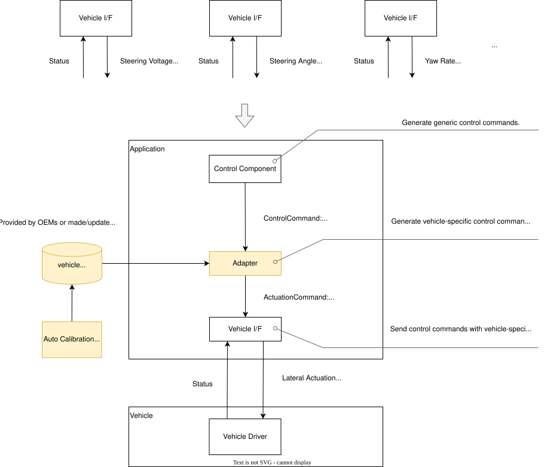